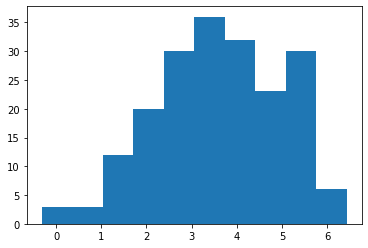
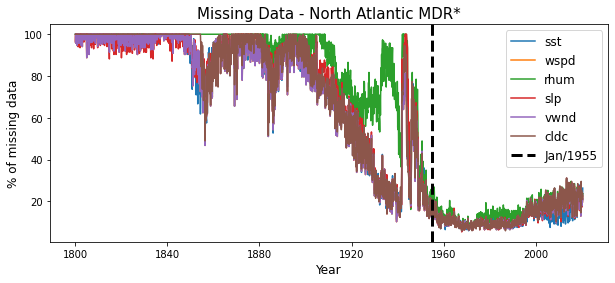
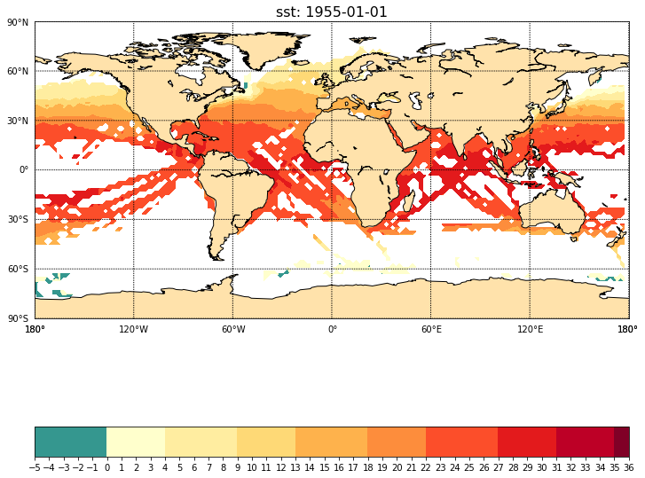
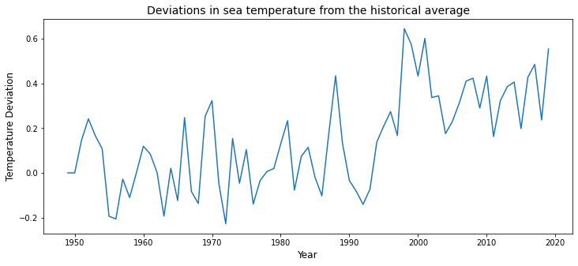
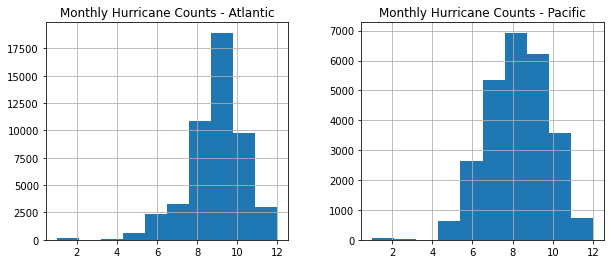
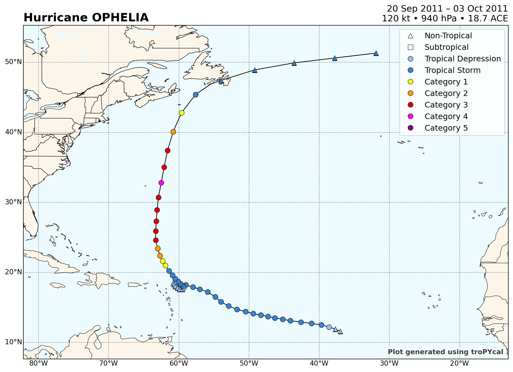

Exploratory Data Analysis
Group: Alysson Espíndola de Sá Silveira, Rener de Souza Oliveira, Yuri Luis Faria Silva
# !apt-get install libgeos-3.5.0
# !apt-get install libgeos-dev
# !pip install https://github.com/matplotlib/basemap/archive/master.zip
# !pip install pyproj==1.9.6
# !pip install netCDF4
# !pip install jinja2
# !pip install geopy
# !pip install xarray
# !pip install networkx
# !pip install requests
# !pip install cartopy
# !pip install tropycal
#Uncomment the above lines and execute this cell; then go to "Runtime"->"Restart Runtime".
%matplotlib inline
import numpy as np
import matplotlib.pyplot as plt
import matplotlib.colors as c
from mpl_toolkits.basemap import Basemap,shiftgrid
import pandas as pd
import netCDF4 as nc
1 - Missing Data - netCDF4
This part of our data is in .nc file extension, which stands for netCDF4. It's widely used in climatology and has python support for reading it.
sst_mean = nc.Dataset('Datasets/sst.mean.nc','r')
rhum_mean = nc.Dataset('Datasets/rhum.mean.nc','r')
wspd_mean = nc.Dataset('Datasets/wspd.mean.nc','r')
slp_mean = nc.Dataset('Datasets/slp.mean.nc','r')
vwnd_mean = nc.Dataset('Datasets/vwnd.mean.nc','r')
cldc_mean = nc.Dataset("Datasets/cldc.mean.nc",'r')
lats = sst_mean.variables['lat'][:]
lons = sst_mean.variables['lon'][:]
time = sst_mean.variables['time'][:]
sst = sst_mean.variables['sst'][:,:,:]
rhum = rhum_mean.variables['rhum'][:,:,:]
wspd = wspd_mean.variables['wspd'][:,:,:]
slp = slp_mean.variables['slp'][:,:,:]
vwnd = vwnd_mean.variables['vwnd'][:,:,:]
cldc = cldc_mean.variables['cldc'][:,:,:]
sst_mean.close()
wspd_mean.close()
rhum_mean.close()
slp_mean.close()
vwnd_mean.close()
cldc_mean.close()
period = pd.date_range(start = "1800-01-01",end = "2020-07-01", freq = "MS").to_pydatetime().tolist()
def get_missing(data:list,labels:list)->dict:
missing={}
lenght = data[0].shape[0]
for j,item in enumerate(data):
missing[labels[j]] = []
for i in range(lenght):
missing[labels[j]].append(100*np.sum(item[i].mask)/item[i].data.size)
return missing
missing = get_missing([sst,wspd,rhum,slp,vwnd,cldc],['sst','wspd','rhum','slp','vwnd','cldc'])
fig,ax = plt.subplots(1,1,figsize=(10,4))
ax.set_title("Missing Data - Global",fontsize=15)
ax.set_xlabel("Year",fontsize=12)
ax.set_ylabel("% of missing data",fontsize=12)
for key,value in missing.items():
ax.plot(period,missing[key],label=key)
ax.legend(loc='best',fontsize=12);
fig.savefig('missing.png')
plt.show()
print(type(sst))

<class 'numpy.ma.core.MaskedArray'>
Legend:
- sst: Sea Surface Temperature
- wspd: Scalar Wind Speed
- rhum: Relative Humidity
- slp: Sea Level Pressure
- vwnd: V-wind component
- cldc: Cloudiness
Since continents represent approximately of earth surface and the data cover just oceans, The continents are filled with missing values. So, naturally, this percentage is the lower bound of missing data.
Note that the data types are "numpy.ma.core.MaskedArray" which has an attribute "mask", which is an indicator variable of missingness; That's gonna help us deal with it.
As we can see in the above plot, we have decades with missingness levels above 90%. Soon, we're gonna analyze focusing on Pacific and North Atlantic, which is our study area.
sst_mean = nc.Dataset('Datasets/sst.mean.nc','r')
x = sst_mean['sst'][:]
plt.hist(x[:,70, 40][x[:,70, 40].data<20000]) #testes com masked array
(array([ 3., 3., 12., 20., 30., 36., 32., 23., 30., 6.]),
array([-0.30999756, 0.36400145, 1.0380005 , 1.7119995 , 2.3859985 ,
3.0599976 , 3.7339966 , 4.4079957 , 5.0819945 , 5.755994 ,
6.4299927 ], dtype=float32),
<a list of 10 Patch objects>)

x.shape
(2647, 90, 180)
sst_at = sst[:,34:40,51:82] #10°-20°N, 80°-20°W
wspd_at = wspd[:,34:40,51:82]
rhum_at = rhum[:,34:40,51:82]
slp_at = slp[:,34:40,51:82]
vwnd_at = vwnd[:,34:40,51:82]
cldc_at = cldc[:,34:40,51:82]
# sst_pac = sst[:,14:45,0:41] #0°-60°N, 100°W-180°W
# wspd_pac = wspd[:,14:45,0:41]
# rhum_pac = rhum[:,14:45,0:41]
missing_at = get_missing([sst_at,wspd_at,rhum_at,slp_at,vwnd_at,cldc_at],['sst_at','wspd_at','rhum_at','slp_at','vwnd_at','cldc_at'])
# missing_pac = get_missing([sst_pac,wspd_pac,rhum_pac],['sst_pac','wspd_pac','rhum_pac'])
# fig,(ax,ax1) = plt.subplots(2,1,figsize=(10,8))
fig,ax = plt.subplots(1,1,figsize=(10,4))
ax.set_title("Missing Data - North Atlantic MDR*",fontsize=15)
ax.set_xlabel("Year",fontsize=12)
ax.set_ylabel("% of missing data",fontsize=12)
for key,value in missing_at.items():
ax.plot(period,missing_at[key],label=key[0:-3])
plt.axvline(x=period[1860],label = "Jan/1955",color = 'black', lw=3,ls='--')
ax.legend(loc='best',fontsize=12);
fig.savefig('missing_mdr.png')

*MDR stands for Main Development Region which refers to the rectangle 10°-20°N, 80°-20°W.
We can see that after the decade 1950-1960, we have more a more complete dataset in our study region. So, to understand the relation of the variables, we're gonna work starting this decade.
But, nothing keeps us from working with older data, since values don't vary a lot when it's close; If we wanted to work with long-term trends we could cut the data starting from 1920, and just apply the mean, even with % of missing data. that's because we have an indicator array, which can help with modeling. Also, this percentage is a little lower because of the continental area in the MDR cut considered.
Below, we have an example of the distribution of SST data in January 1955.
2 - Visualization
#Transforms longitude ranges from [0,360] para [-180,180] --> useful for plot
sst[:],lonsn = shiftgrid(180,sst[:],lons,start=False)
wspd[:],lonsn = shiftgrid(180,wspd[:],lons,start=False)
# shum[:],lonsn = shiftgrid(180,shum[:],lons,start=False)
rhum[:],lonsn = shiftgrid(180,rhum[:],lons,start=False)
lons = lonsn
#Reference: https://annefou.github.io/metos_python/04-plotting/
time_index = 1860
fig = plt.figure(figsize=[12,15])
ax = fig.add_subplot(1, 1, 1)
ax.set_title("sst: {}".format(period[time_index].date()),fontsize=16)
map = Basemap(projection='cyl',llcrnrlat=-90,urcrnrlat=90,\
llcrnrlon=-180,urcrnrlon=180,resolution='c', ax=ax)
map.drawcoastlines()
map.fillcontinents(color='#ffe2ab')
map.drawparallels(np.arange(-90.,120.,30.),labels=[1,0,0,0])
map.drawmeridians(np.arange(-180.,180.,60.),labels=[0,0,0,1])
llons, llats = np.meshgrid(lons, lats)
x,y = map(llons,llats)
cmap = c.ListedColormap(['#35978f','#ffffcc','#ffeda0','#fed976','#feb24c','#fd8d3c',
'#fc4e2a','#e31a1c','#bd0026','#800026'])
bounds=list(np.arange(-5,37,1))
# bounds=list(np.arange(10,100,5))
norm = c.BoundaryNorm(bounds, ncolors=cmap.N)
cs = map.contourf(x,y,sst[time_index], cmap=cmap, norm=norm, levels=bounds)
fig.colorbar(cs, cmap=cmap, norm=norm, boundaries=bounds, ticks=bounds, ax=ax, orientation='horizontal');

A good way to visualize this data is with animation, but the above plot gives us a very good glimpse of what kind of data we're working on.
print(period[1788])
1949-01-01 00:00:00
print(period[1860]) # -- 1955 January
def get_mean(data):
size = data.shape[0]
new = np.array([])
for i in range(size):
new = np.append(new,np.mean(data[i,:,:]))
return new
#We're gonna start from the time index 1788, representing January 1949, to match with our PDI dataset.
data_at = pd.DataFrame(get_mean(sst_at[1788:,:,:]),columns =["sst"])
period_df = pd.DataFrame(period[1788:],columns = ["Date"])
period_df['Year']=period_df.Date.map(lambda x: x.year)
period_df['Month']=period_df.Date.map(lambda x: x.month)
data_at['rhum'] = pd.DataFrame(get_mean(rhum_at[1788:,:,:]),columns =["rhum"])
data_at['slp'] = pd.DataFrame(get_mean(slp_at[1788:,:,:]),columns =["slp"])
data_at['wspd'] = pd.DataFrame(get_mean(wspd_at[1788:,:,:]),columns =["wspd"])
data_at['vwnd'] = pd.DataFrame(get_mean(vwnd_at[1788:,:,:]),columns =["vwnd"])
data_at['cldc'] = pd.DataFrame(get_mean(cldc_at[1788:,:,:]),columns =["cldc"])
atlantic_mdr = pd.concat([period_df,data_at],axis=1)
cum_sum = {}
for i in range(1,13):
cum_sum[i]=0
k=0 #year count
for i in range(0,atlantic_mdr.shape[0]-12):
month = atlantic_mdr.iloc[i,:].Month
if month%12==1:
k+=1
cum_sum[month]+=atlantic_mdr.iloc[i,3]
atlantic_mdr.loc[atlantic_mdr.index[i],'sst_anomaly'] = atlantic_mdr.iloc[i,3]-cum_sum[month]/k
atlantic_mdr.drop('sst_anomaly',axis=1).to_csv('Datasets/atlantic_mdr.csv',index=False)
atlantic_mdr.iloc[12:24,:]
1955-01-01 00:00:00
| Date | Year | Month | sst | rhum | slp | wspd | vwnd | cldc | sst_anomaly | |
|---|---|---|---|---|---|---|---|---|---|---|
| 12 | 1950-01-01 | 1950 | 1 | 26.618658 | 80.166064 | 1012.699219 | 6.274566 | -2.709708 | 4.139401 | 0.401114 |
| 13 | 1950-02-01 | 1950 | 2 | 25.996199 | 78.348542 | 1012.883875 | 6.633078 | -2.401613 | 3.965875 | 0.150126 |
| 14 | 1950-03-01 | 1950 | 3 | 26.414721 | 80.421051 | 1013.134516 | 5.954330 | -2.062759 | 4.087092 | 0.269065 |
| 15 | 1950-04-01 | 1950 | 4 | 27.401395 | 81.788231 | 1011.096354 | 4.909927 | -0.454326 | 3.146995 | 0.092152 |
| 16 | 1950-05-01 | 1950 | 5 | 28.472969 | 80.007482 | 1010.577563 | 5.476332 | 0.516981 | 4.291411 | 0.073090 |
| 17 | 1950-06-01 | 1950 | 6 | 28.896216 | 81.928657 | 1009.393293 | 4.850322 | 2.076482 | 4.650387 | -0.032209 |
| 18 | 1950-07-01 | 1950 | 7 | 29.033083 | 81.664352 | 1007.978285 | 5.042128 | 2.375750 | 5.184904 | 0.050943 |
| 19 | 1950-08-01 | 1950 | 8 | 28.283786 | 82.927725 | 1007.856950 | 4.906136 | 1.956808 | 5.109233 | -0.403537 |
| 20 | 1950-09-01 | 1950 | 9 | 28.832019 | 82.908388 | 1007.869104 | 4.910579 | 0.525868 | 5.305648 | 0.051078 |
| 21 | 1950-10-01 | 1950 | 10 | 28.090939 | 80.471020 | 1010.697798 | 5.345116 | -1.037250 | 4.423469 | -0.236270 |
| 22 | 1950-11-01 | 1950 | 11 | 27.558145 | 80.553408 | 1009.745018 | 6.262806 | -2.024746 | 3.765682 | -0.195893 |
| 23 | 1950-12-01 | 1950 | 12 | 26.741317 | 79.440282 | 1012.071718 | 7.539570 | -4.750430 | 4.100716 | -0.222622 |
fig,ax = plt.subplots(1,1,figsize=(12,5))
ax.plot(np.arange(1949,2021,1),atlantic_mdr.groupby(['Year']).agg({'sst_anomaly':np.mean})['sst_anomaly'])
ax.set_title("Deviations in sea temperature from the historical average",fontsize=14)
ax.set_xlabel("Year",fontsize=12)
ax.set_ylabel("Temperature Deviation",fontsize=12);

corr = atlantic_mdr.corr()
corr.style.background_gradient(cmap='coolwarm')
| Year | Month | sst | rhum | slp | vwnd | cldc | sst_anomaly | |
|---|---|---|---|---|---|---|---|---|
| Year | 1.000000 | -0.010203 | 0.164281 | -0.042398 | 0.048908 | -0.035567 | 0.241832 | 0.465285 |
| Month | -0.010203 | 1.000000 | 0.541188 | 0.447957 | -0.434216 | 0.151316 | 0.380311 | 0.001361 |
| sst | 0.164281 | 0.541188 | 1.000000 | 0.549282 | -0.834263 | 0.813505 | 0.402424 | 0.296363 |
| rhum | -0.042398 | 0.447957 | 0.549282 | 1.000000 | -0.628214 | 0.502711 | 0.412368 | 0.033063 |
| slp | 0.048908 | -0.434216 | -0.834263 | -0.628214 | 1.000000 | -0.812037 | -0.548567 | -0.038420 |
| vwnd | -0.035567 | 0.151316 | 0.813505 | 0.502711 | -0.812037 | 1.000000 | 0.236100 | 0.056093 |
| cldc | 0.241832 | 0.380311 | 0.402424 | 0.412368 | -0.548567 | 0.236100 | 1.000000 | 0.043181 |
| sst_anomaly | 0.465285 | 0.001361 | 0.296363 | 0.033063 | -0.038420 | 0.056093 | 0.043181 | 1.000000 |
3 - The Hurricane Dataset
df = pd.read_csv('Datasets/atlantic_new.csv')
df2 = pd.read_csv('Datasets/pacific_new.csv')
fig, axs = plt.subplots(1,2, figsize=(10,4))
df.hist('month', ax=axs[0])
# plt.hist(df.month, ax=axs[0])
axs[0].set_title("Monthly Hurricane Counts - Atlantic") #tepo
df2.hist('month', ax=axs[1])
axs[1].set_title("Monthly Hurricane Counts - Pacific");

df[df.year==2011].sort_values(by='Maximum Wind',ascending=0)
| ID | Name | Date | Time | Event | Status | Latitude | Longitude | Maximum Wind | Minimum Pressure | ... | Moderate Wind NE | Moderate Wind SE | Moderate Wind SW | Moderate Wind NW | High Wind NE | High Wind SE | High Wind SW | High Wind NW | month | year | |
|---|---|---|---|---|---|---|---|---|---|---|---|---|---|---|---|---|---|---|---|---|---|
| 47316 | AL162011 | OPHELIA | 2011-10-02 | 0 | HU | 32.8 | -62.5 | 120 | 940 | ... | 60 | 60 | 40 | 40 | 30 | 30 | 20 | 20 | 10 | 2011 | |
| 47154 | AL122011 | KATIA | 2011-09-06 | 0 | HU | 25.6 | -64.0 | 120 | 942 | ... | 80 | 70 | 60 | 70 | 50 | 50 | 40 | 50 | 9 | 2011 | |
| 47155 | AL122011 | KATIA | 2011-09-06 | 600 | HU | 26.2 | -64.8 | 115 | 946 | ... | 80 | 70 | 60 | 70 | 50 | 50 | 40 | 50 | 9 | 2011 | |
| 47315 | AL162011 | OPHELIA | 2011-10-01 | 1800 | HU | 30.7 | -62.9 | 110 | 946 | ... | 60 | 60 | 40 | 40 | 30 | 30 | 20 | 20 | 10 | 2011 | |
| 47153 | AL122011 | KATIA | 2011-09-05 | 1800 | HU | 24.8 | -63.4 | 110 | 946 | ... | 80 | 70 | 60 | 70 | 50 | 50 | 40 | 50 | 9 | 2011 | |
| ... | ... | ... | ... | ... | ... | ... | ... | ... | ... | ... | ... | ... | ... | ... | ... | ... | ... | ... | ... | ... | ... |
| 47201 | AL132011 | LEE | 2011-09-06 | 600 | EX | 33.4 | -85.3 | 20 | 997 | ... | 0 | 0 | 0 | 0 | 0 | 0 | 0 | 0 | 9 | 2011 | |
| 47119 | AL122011 | KATIA | 2011-08-28 | 600 | LO | 9.4 | -20.3 | 20 | 1011 | ... | 0 | 0 | 0 | 0 | 0 | 0 | 0 | 0 | 8 | 2011 | |
| 47118 | AL122011 | KATIA | 2011-08-28 | 0 | LO | 9.5 | -19.0 | 20 | 1012 | ... | 0 | 0 | 0 | 0 | 0 | 0 | 0 | 0 | 8 | 2011 | |
| 47202 | AL132011 | LEE | 2011-09-06 | 1200 | EX | 34.2 | -85.1 | 15 | 1000 | ... | 0 | 0 | 0 | 0 | 0 | 0 | 0 | 0 | 9 | 2011 | |
| 47203 | AL132011 | LEE | 2011-09-06 | 1800 | EX | 34.9 | -85.3 | 15 | 1004 | ... | 0 | 0 | 0 | 0 | 0 | 0 | 0 | 0 | 9 | 2011 |
557 rows × 24 columns
# from cartopy import features.Border
import tropycal.tracks as tracks
hurdat = tracks.TrackDataset(basin='north_atlantic')
--> Starting to read in HURDAT2 data
--> Completed reading in HURDAT2 data (5.41 seconds)
import cartopy.crs as ccrs
katia = hurdat.get_storm(('katia',2011))
ophelia = hurdat.get_storm(('ophelia',2011))
katia.plot()

ophelia.plot()

df.sort_values(by='year',ascending=0)
| ID | Name | Date | Time | Event | Status | Latitude | Longitude | Maximum Wind | Minimum Pressure | ... | Moderate Wind NE | Moderate Wind SE | Moderate Wind SW | Moderate Wind NW | High Wind NE | High Wind SE | High Wind SW | High Wind NW | month | year | |
|---|---|---|---|---|---|---|---|---|---|---|---|---|---|---|---|---|---|---|---|---|---|
| 49104 | AL122015 | KATE | 2015-11-13 | 1200 | EX | 40.7 | -45.4 | 45 | 987 | ... | 0 | 0 | 0 | 0 | 0 | 0 | 0 | 0 | 11 | 2015 | |
| 48881 | AL062015 | FRED | 2015-08-30 | 1800 | TS | 14.0 | -20.7 | 55 | 998 | ... | 30 | 30 | 10 | 20 | 0 | 0 | 0 | 0 | 8 | 2015 | |
| 48873 | AL052015 | ERIKA | 2015-08-27 | 1200 | TS | 16.5 | -62.2 | 45 | 1004 | ... | 0 | 0 | 0 | 0 | 0 | 0 | 0 | 0 | 8 | 2015 | |
| 48874 | AL052015 | ERIKA | 2015-08-27 | 1800 | TS | 16.6 | -63.6 | 45 | 1006 | ... | 0 | 0 | 0 | 0 | 0 | 0 | 0 | 0 | 8 | 2015 | |
| 48875 | AL052015 | ERIKA | 2015-08-28 | 0 | TS | 17.2 | -65.1 | 45 | 1006 | ... | 0 | 0 | 0 | 0 | 0 | 0 | 0 | 0 | 8 | 2015 | |
| ... | ... | ... | ... | ... | ... | ... | ... | ... | ... | ... | ... | ... | ... | ... | ... | ... | ... | ... | ... | ... | ... |
| 69 | AL051851 | UNNAMED | 1851-09-14 | 0 | TS | 32.5 | -73.5 | 50 | -999 | ... | -999 | -999 | -999 | -999 | -999 | -999 | -999 | -999 | 9 | 1851 | |
| 70 | AL051851 | UNNAMED | 1851-09-14 | 600 | TS | 32.5 | -73.5 | 50 | -999 | ... | -999 | -999 | -999 | -999 | -999 | -999 | -999 | -999 | 9 | 1851 | |
| 71 | AL051851 | UNNAMED | 1851-09-14 | 1200 | TS | 32.5 | -73.5 | 50 | -999 | ... | -999 | -999 | -999 | -999 | -999 | -999 | -999 | -999 | 9 | 1851 | |
| 72 | AL051851 | UNNAMED | 1851-09-14 | 1800 | TS | 32.5 | -73.5 | 50 | -999 | ... | -999 | -999 | -999 | -999 | -999 | -999 | -999 | -999 | 9 | 1851 | |
| 0 | AL011851 | UNNAMED | 1851-06-25 | 0 | HU | 28.0 | -94.8 | 80 | -999 | ... | -999 | -999 | -999 | -999 | -999 | -999 | -999 | -999 | 6 | 1851 |
49105 rows × 24 columns